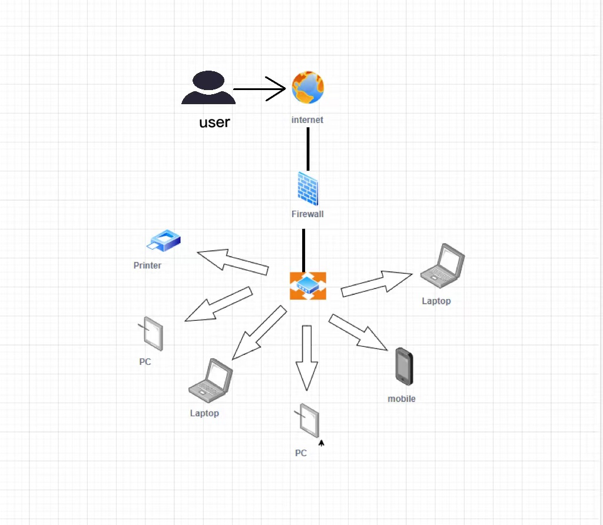
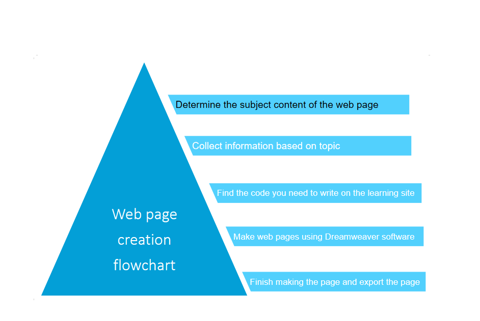

1. Web design stage: First of all, you must choose the theme content of the web page, must have its own characteristics, and then construct the plan according to the theme, and then collect the text, audio, video, pictures, books, Internet, magazines required materials. 2. Web page production stage: use Dreamweaver, PS and other software to make web pages, and arrange material processing and production according to the needs of the production process. 3. Export the code to make a web page using Notepad
 | Laptop | PC | mobile | Printer | router |
|---|---|---|---|---|
| HUAWEI matebook 14s 2021 | IPAD PRO | iphone13 pro | Samsung | H3c AP530 |